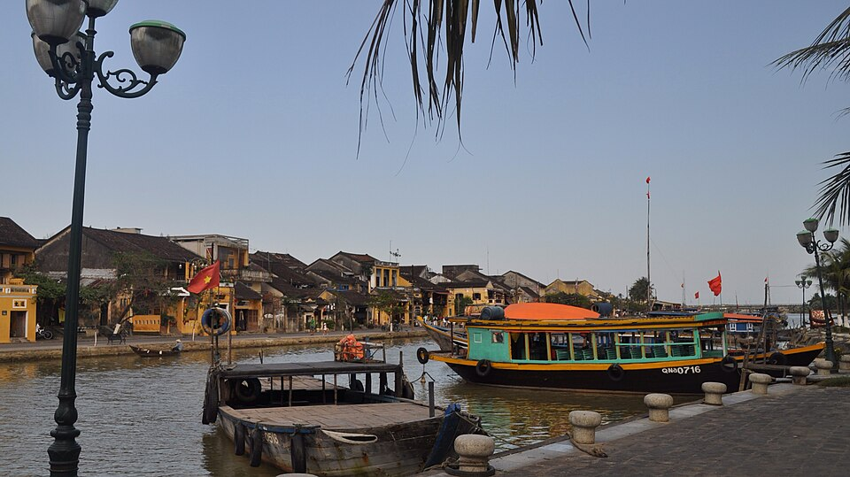
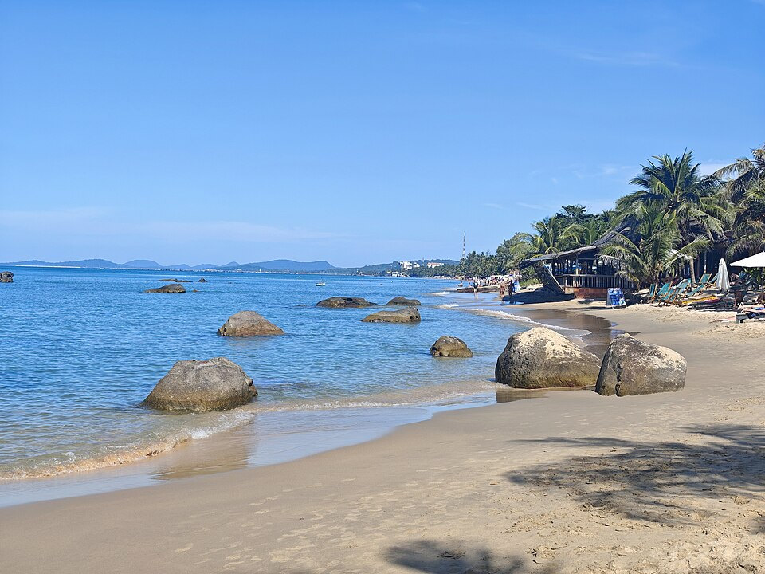
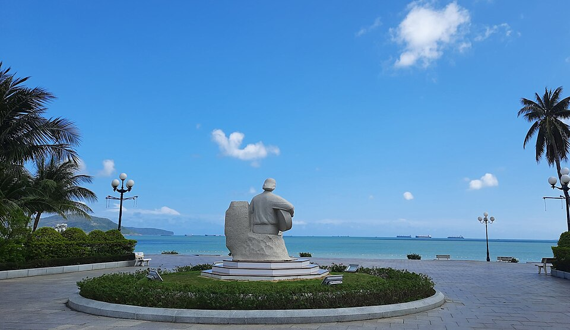

← Về TaskHub
Nguồn ảnh minh họa
Đây là ảnh địa danh để minh họa tour. Không phải ảnh đoàn khách của TaskHub hoặc bằng chứng tour đã bán. Ảnh thực tế của chuyến đi có thể khác.

Hội An
Hoi An Ancient Town, Vietnam (7090654493) · David McKelvey · CC BY 2.0.

Phú Quốc
Phu Quoc Beach · FrogsLegs71 · CC BY-SA 3.0.

Quy Nhơn
Biển Quy Nhơn nhìn từ tượng nhạc sĩ Trịnh Công Sơn · Tandaivietnam · CC BY 4.0.
Nguồn: Wikimedia Commons. Dùng nguyên bản thu nhỏ 960 px của Wikimedia; khung hiển thị trên web có thể cắt ảnh. Ảnh và phần cắt của ảnh Phú Quốc tiếp tục áp dụng CC BY-SA 3.0. Các giấy phép này áp dụng cho ảnh tương ứng. Đã đối chiếu nguồn ngày 19/10/2026 (giờ Việt Nam).
Ảnh danh mục Én Việt được ghi nguồn riêng ở thông tin tour; không thuộc bộ ảnh Wikimedia trên trang này.